iOS应用ipv6支持
检查客户端对ipv6的支持
|
|
用Mac搭建一个用于测试的本地的IPv6 DNS64/NAT64网络。
IPv6 DNS64/NAT64模拟环境只在OS X10.11及以上支持
如下图：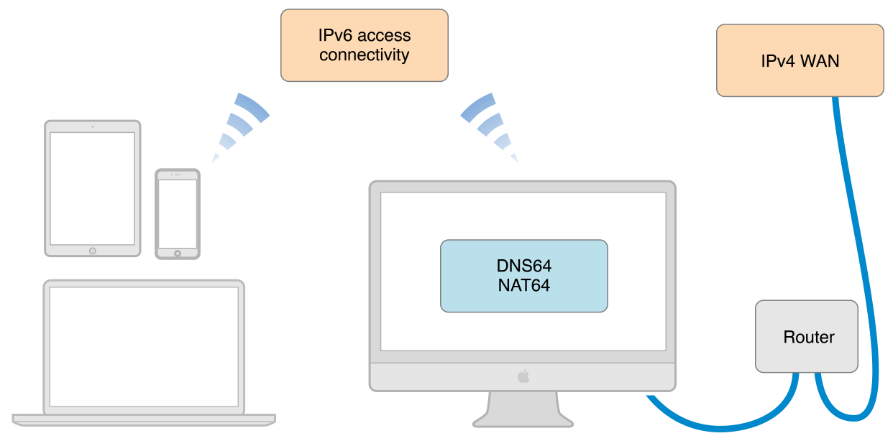
- 确认Mac不是使用Wi-Fi连接网络；
- 打开
系统偏好设置； 按住
Option键的同时选择共享，不要放开共享键。
如图：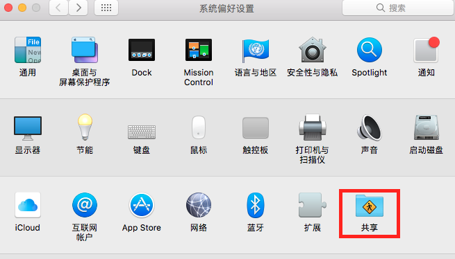在共享菜单中选择网络共享;
- 放开
Option键； - 选择创建
创建 NAT64 网络；
如图：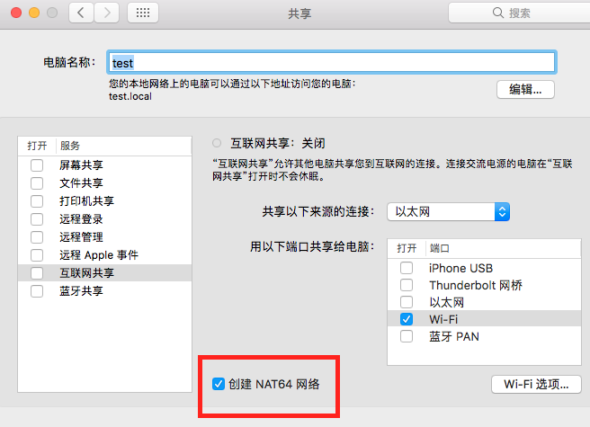 - 选择提供共享网络的链接，例如：以太网；
- 选择
Wi-Fi； - 选择
Wi-Fi选项,然后配置网络名称和安全选项；
如图：![aplle] - 选中
互联网共享复选框激活热点网络； - 弹出确认分享的窗口，选择
启动。
当激活共享后，就可以看到一个绿色状态灯和一个写着‘互联网共享：打开’的标签。在Wi-Fi菜单中，也可以看到一个小的、颜色很淡的向上箭头，表明互联网共享生效了。这样就有了IPv6 NAT64网络，这样就可以链接热点来测试app。
以上通过之后，就说明客户端在正常支持ipv6。接下来就是服务端。
检查服务端对ipv6的支持
可以在网站IP v6 test进行测试,
测试下www.baidu.com 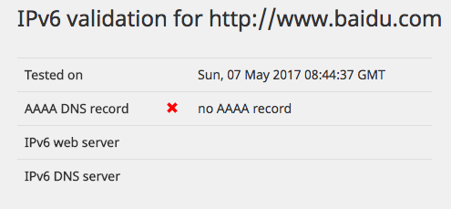
好吧，百度目前还不支持IP v6
测试下www.tsinghua.edu.cn 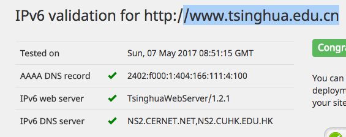
教育网用户清华大学支持IP v6
现在开始配置服务端ipv6支持
以下以为阿里云ECS（CentOS6）配置IPv6隧道地址为例：
环境：ECS“经典网络”类型，CentOS 6.5 64位系统。
CentOS 6.5没启用IP v6地址
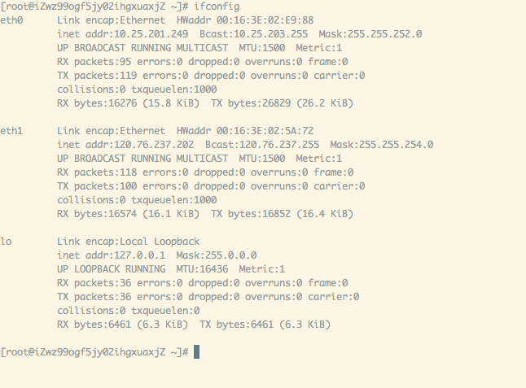
编辑文件
/etc/modprobe.d/disable_ipv6.conf将其中的三行都注释掉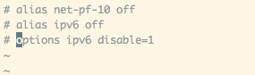
1vi /etc/modprobe.d/disable_ipv6.conf编辑文件
/etc/sysconfig/network将其中的 NETWORKING_IPV6=no 改为 NETWORKING_IPV6=yes，
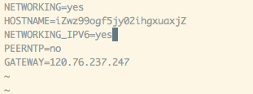1vi /etc/sysconfig/network重启系统，以让更改生效。系统重启后，运行 ifconfig 命令，可以看到IPv6的地址
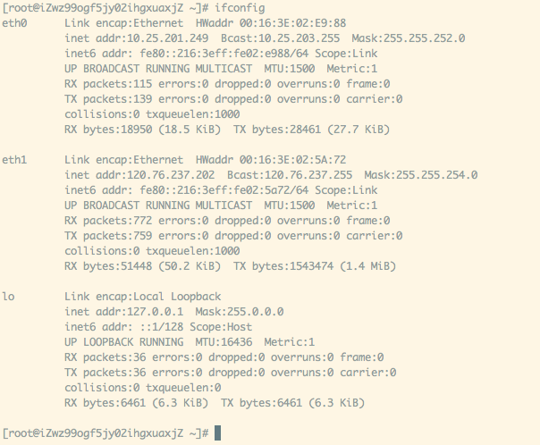
执行
HE 隧道地址配置例子中的 Linux-net-tools 命令，如本例是：
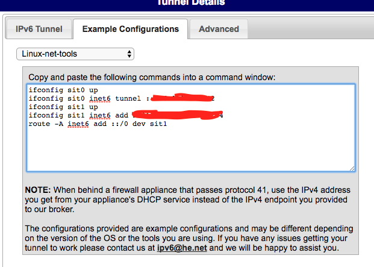重启nginx
ifconfig，隧道配置成功
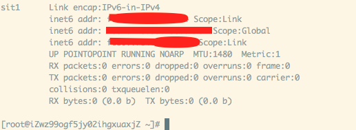查看web service监听,正常
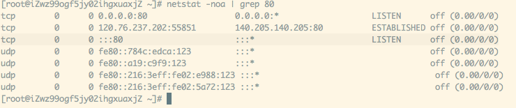用curl测试IP v6域名和ip地址正常。实践中，访问IPv6的网站内容可能较慢，这可能是因为提供隧道地址的网络与国内连接较慢
123curl test.xxxxx.com -so - | grep -iPo '(?<=<title>)(.*)(?=</title>)'curl -6 test.xxxxx.com -so - | grep -iPo '(?<=<title>)(.*)(?=</title>)'curl [2001:444:44:4444::2] -so - | grep -iPo '(?<=<title>)(.*)(?=</title>)'
与苹果的斗争
如果app在模拟IP v6环境下正常，Serve在IP v6 test前两项通过，那就去申诉吧
贴上视屏、贴上图片。
个人blog正在搭建中。有问题可以QQ：1535720485，或者邮件yan.panpan@foxmail.com